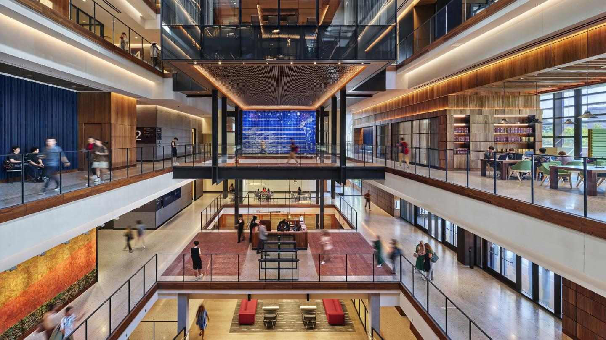
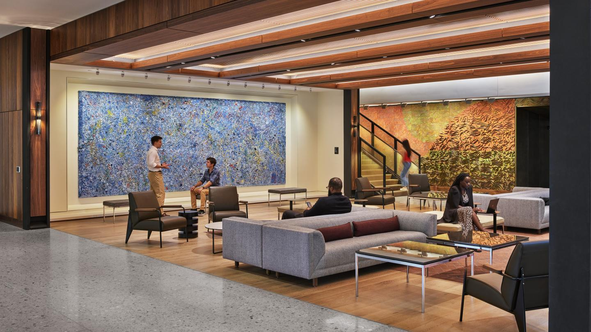
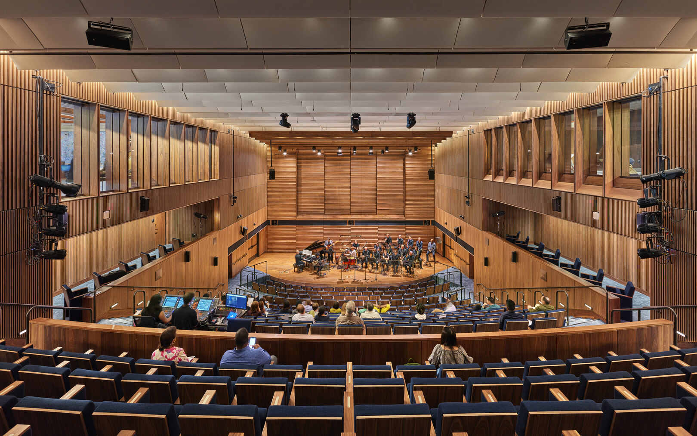

The Johns Hopkins University Bloomberg Center at 555 Pennsylvania Avenue in Washington, D.C. is a 435,000-square-foot adaptive reuse of the former Newseum that has been transformed into a cutting-edge academic hub. The redesign reconfigures the interior and reinterprets the façade to bring light, transparency, and flexibility to learning, gathering, and public spaces. Its success lies in turning a once cultural institution into a vibrant urban vertical quad for education.
View Final Project PhotographyRole

The project began with the challenge of converting an inward-facing museum into a flexible academic environment capable of supporting diverse programs and modes of learning. Design efforts focused on dismantling the original exhibition-driven planning logic by opening floor plates, redefining circulation, and establishing visual and physical connections across levels. Shared spaces were strategically positioned to function as social and academic connectors, encouraging collaboration and informal exchange. Façade interventions and interior reorganization introduced daylight and transparency, aligning the building’s internal experience with its civic presence along Pennsylvania Avenue. Together, these moves demonstrated how adaptive reuse could be leveraged as an active design process rather than a constraint.
During the pre-design and schematic design process, a series of workshops were conducted with the users to understand the vision for this project. The following key findings were identified:
Because the building was originally designed to house museum galleries, the existing floor-to-floor heights did not align with the spatial requirements of contemporary academic environments. To address this, select floor slabs were identified for demolition to create accessible, flexible floor plates appropriate for teaching and collaboration. Slab openings were introduced along the north façade to bring daylight deeper into areas designated for workspaces. Additional slab infills were strategically designed to meet programmatic requirements while maintaining target gross area.

The programming data gathered during early planning was translated into two-dimensional floor plans. This step involved defining adjacencies, spatial relationships, circulation patterns, and organizational strategies on a floor-by-floor basis. Spaces were planned to remain flexible and adaptable in order to accommodate future changes in program or pedagogy. At this stage, high-level coordination began with structural, mechanical, electrical, plumbing, and life-safety consultants to confirm overall feasibility.

Material studies were conducted concurrently with the programming and planning exercises. The National Gallery of Art’s East and West Buildings, along with the existing Newseum, utilize Tennessee marble with a subtle pink undertone. Reintroducing Tennessee marble in the renovation became an important strategy for reinforcing the building’s contextual and civic identity. The use of glass with a copper interlayer, combined with bronze metal panels, further strengthened the façade’s warmth and material continuity within the surrounding urban fabric.

In parallel with early planning efforts, the overall building massing was studied to evaluate relationships between program, context, daylight, transparency, and environmental performance.
The existing building form was made up of three rectangular "bars" aligned with the Pennsylvania Avenue street wall, varying in length, height, and degree of transparency. These bars were separated by 12-foot-wide circulation zones connected by bridges and open stairs that originally guided visitors through museum exhibits and across floor levels. This fundamental organizational strategy was retained in the new design.
Most of the exterior envelop modifications were focused on the main façade facing Pennsylvania Avenue. The 50-ton, 100-foot-wide First Amendment tablet was removed, and the recessed window condition was infilled to increase program area and bring visible academic activity closer to the street. The east and west façades remained more transparent to reinforce axial relationships with the U.S. Capitol and the White House.

The renovation simplified and reorganized the Newseum's building plan to support Johns Hopkins University’s academic mission and promote high levels of student engagement. Workspaces were arranged to offer a diversity of settings, balancing quiet, focused environments with collaborative hubs and shared gathering spaces. Academic spaces were designed to support long-term flexibility, accommodate expanding programs, and serve as a platform for innovative pedagogy. A conference center on the upper levels of the building offers convening spaces for topic experts, policymakers, academic and policy leaders.

The JHU Bloomberg Center reinterprets the original Newseum's façade through a renewed material palette that reinforces Johns Hopkins’ institutional identity while responding to the surrounding historic context. The primary entry shifted eastward to enhance the existing mid-block plaza, improving the arrival sequence, and providing more direct access to vertical circulation. While maintaining the building’s established alignments and organizational clarity, targeted adjustments to the façade increased daylight penetration and enhanced health and wellness throughout the interior.






Coded with ♥ by Aurélie